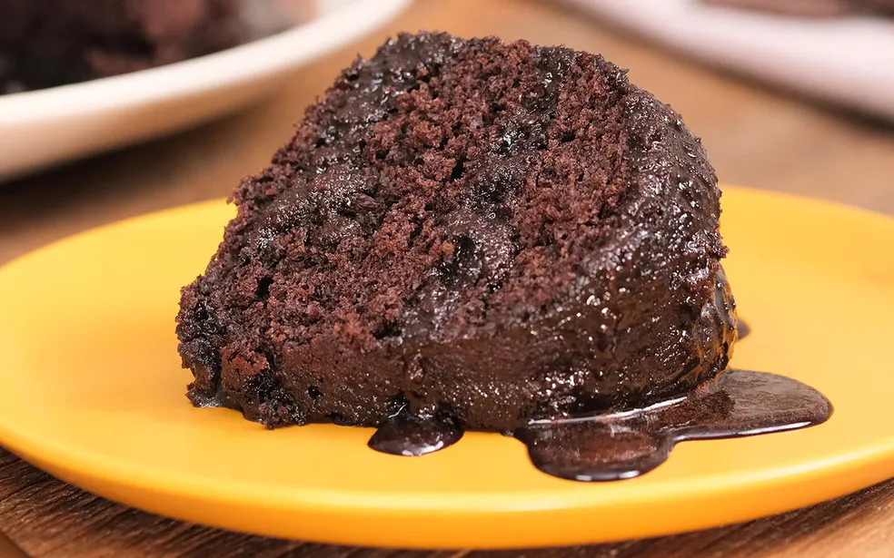

bolo de chocolate

- 3 ovos
- 1 e meia xícara de chá de açúcar
- Meia xícara de chá de óleo
- 1 xícara de chá de chocolate em pó
- 2 xícaras de chá de farinha de trigo
- 1 xícara de chá de água quente
- 1 colher de sopa de fermento em pó

modo de preparo
- Em uma tigela, coloque 3 ovos, 1 e meia xícara de chá de açúcar, meia xícara de chá de óleo, 1 xícara de chá de chocolate em pó e 2 xícaras de chá de farinha de trigo. Misture delicadamente os ingredientes.
- Em seguida, adicione 1 xícara de chá de água quente, 1 colher de sopa de fermento em pó e bata até ficar homogêneo.
- Em seguida, adicione 1 xícara de chá de água quente, 1 colher de sopa de fermento em pó e bata até ficar homogêneo
- Transfira a massa para uma forma untada e enfarinhada com uma mistura de farinha de trigo e chocolate em pó. Leve para assar em forno preaquecido a 180 graus Celsius por 40 minutos.